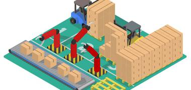
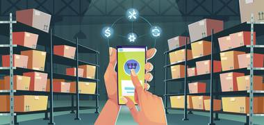
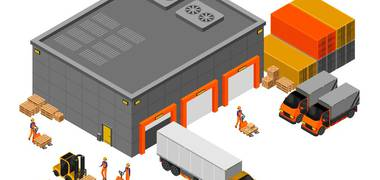
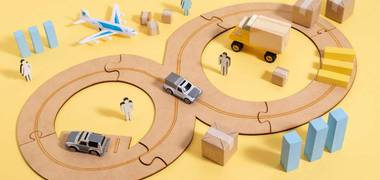
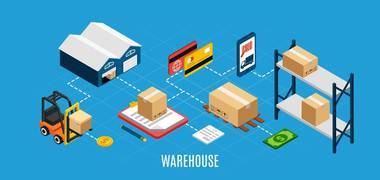
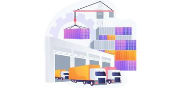
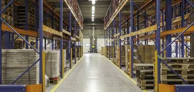

Статьи

Складская логистика: тонкости и нюансы повышени...
Усовершенствовать складскую логистику — значит сделать работу склада быстрее, дешевле и удобнее.
Сертификат происхождения товара: назначение и о...
В международной торговле компании стремятся минимизировать расходы на таможенное оформление товаров.
Грузовая таможенная декларация: важные моменты
Грузовая таможенная декларация (ГТД) — важный инструмент контроля перемещения товаров через границу РФ.

Какие технологии и устройства используются на р...
Роль высокотехнологичных устройств в современной торговле и логистике сложно переоценить.
Преимущества использования облачного сервиса дл...
Облачные хранилища в последнее время все чаще используются в сфере логистики.
Особенности хранения нестандартных грузов
Складские помещения и площадки помогают сохранять первоначальный вид грузов. Для этого требуются специальные условия.

Чем полезен кросс-докинг на складе
Современные компании активно ищут средства оптимизации рабочих процессов, которые помогают экономить время и средства, дают конкурентные преимущества в виде ускоренной доставки.

Безопасные грузоперевозки: что учитывать
При перевозке грузов от поставщика к заказчику компании несут дополнительные расходы, которые включаются в общую стоимость товаров.

Склады ответственного хранения: основные виды
Складом ответственного хранения называется закрытое складское помещение, где оказывается широкий спектр услуг по размещению товаров.

Что такое консолидация грузов и как она работае...
Склады для консолидации грузов стали неотъемлемой частью логистической инфраструктуры современной индустрии.
Таможенное оформление грузов: основные моменты
Таможенное оформление — совокупность определенных последовательных действий по прохождению товаров и транспортных средств через пункты таможенного контроля.
Декларация ТР ТС
Декларация ТР — документ, который обязательно нужно оформлять при ввозе товара.

Таможенный склад
Объект, где размещаются товары и осуществляются связанные с их хранением процедуры, называют таможенным складом.
Акцизная таможня
Оформление подакцизной продукции на центральной таможне